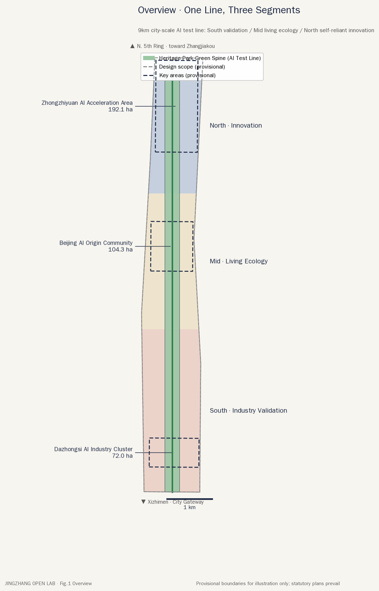
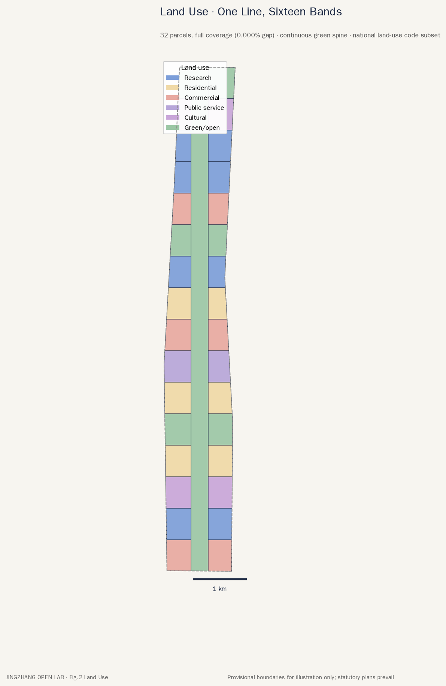
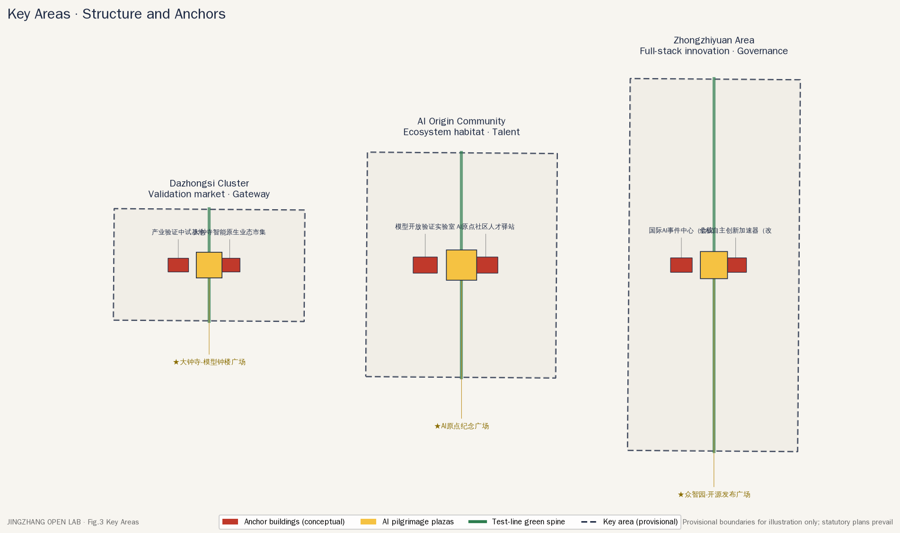
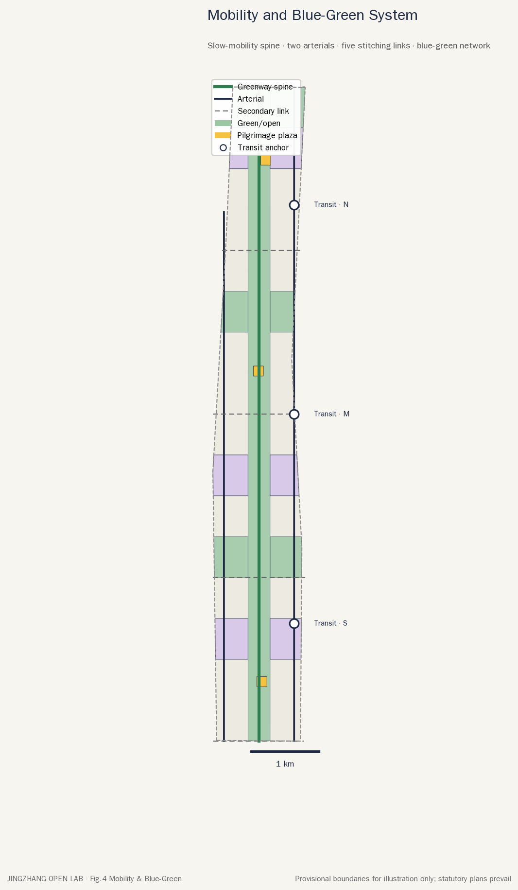
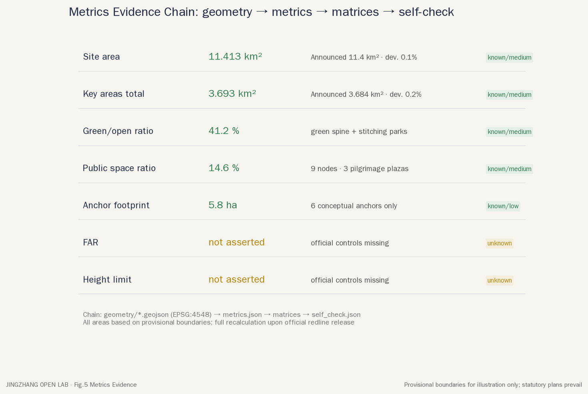

Centennial Jingzhang AI Innovation Belt · Urban Design Concept Open Call · Digital Exhibition Board
京张长实验JINGZHANG OPEN LAB
Turn the Centennial Jingzhang AI Innovation Belt into a continuously running city-scale AI experiment line — the 9 km Jingzhang Railway Heritage Park is not a blueprint drawn once, but a long-running urban experiment protocol: every AI scenario deployed here must be bound to verifiable metrics, an exit plan, and public returns.
The metrics below were independently re-computed on the provisional boundary (PROV-SITE-001) in the EPSG:4548 projection and cross-checked against officially announced values; they must be recalculated once the official red lines are released.
Total site area
11.413km²
Announced 11.4 km² · deviation 0.1%
Re-check passed
Key areas combined
3.693km²
Announced 3.684 km² · deviation 0.2%
Re-check passed
Green & open space ratio
41.2%
Central heritage-park green spine counted as green space
Geometric measurement
Public space ratio
14.6%
public_space / site_area
Geometric measurement
Floor area ratio (FAR)
UNKNOWN
Official regulatory conditions missing; no assertion at concept stage
Pending official terms
Building height limit
UNKNOWN
Official height controls missing; anchor heights are conceptual placeholders only
Pending official terms
Data source: metrics.json in this submission (derived from geometry/*.geojson). All areas are measured on the provisional boundary, confidence medium — for intake display and discussion only, not formal review drawing data.
Spatial Structure · One Line, Sixteen Bands · Three Experiment Segments
SHEET 02 / STRUCTURE
The 9 km Jingzhang Railway Heritage Park runs as the through spine, with a continuous central green corridor occupying 24% of its width; sixteen functional bands attach perpendicularly on both sides, forming a fishbone structure of "one line, sixteen bands". From south to north the line is divided into three experiment segments with a graded functional progression.
South · Industry Validation ZoneMiddle · Talent & Ecosystem ZoneNorth · Full-Stack Innovation ZoneCentral green corridor (24% width)Perpendicular functional bands ×16Jingzhang railway heritage spine
South · Dazhongsi
Industry Validation Zone · 72 ha
Urban front stage of the intelligent economy: the industry validation segment for leading enterprises and new agent-driven businesses, where AI scenarios face real market tests in live commercial settings — deployed one by one as each matures.
Middle · AI Origin Community
Talent & Ecosystem Zone · 104.3 ha
A campus-adjacent translation community: receiving upstream university innovation and open-source communities, focused on the living ecosystem of talent — housing, learning, socializing, and commercialization all along the same green corridor.
North · Zhongzhiyuan
Full-Stack Innovation Zone · 192.1 ha
A garden-style full-stack innovation district: the Zhongzhiyuan AI Acceleration Area for self-reliant innovation from chips and models to agent applications, and the main stage for national platforms and industry showcases.
Core Mechanism · EXPERIMENT PROTOCOL
SHEET 03 / PROTOCOL
The "open lab" is not a license for careless trial and error. Any AI scenario deployed on this experiment line must satisfy all three protocol clauses at once — like a signal-light system, nothing proceeds unless every light allows it.
① Verifiable Metrics
Before deployment, every scenario must declare quantifiable, auditable performance metrics (users served, energy use, false-alarm rate, slow-mobility improvement, etc.), re-measured periodically by a third party and published.
② Exit Plan
If metrics fall short or negative externalities emerge, the scenario must exit in an orderly fashion per its plan — the space restored or handed to the next experiment; no "zombie installations" squatting on public space.
③ Public Returns
Experiments occupy urban space and data resources, so they must return clear public benefits to citizens — as open-source outputs, public services, job training, or opened-up space.
Three AI Pilgrimage Landmarks
SHEET 04 / LANDMARKS
Three plazas anchor the spiritual origin of each experiment segment, strung into a 9 km "AI pilgrimage line" — from the bell of industry to the monument of origins to the arena of open source.
PLAZA-N · NORTH
Zhongzhiyuan Open-Source Release Plaza
The debut stage for open-source models and agents worldwide: main venue of the release season, benchmark arenas, and a developer fair — making a "release" a public urban event.
PLAZA-M · MIDDLE
AI Origin Memorial Plaza
A memorial ground marking the origin point of China's upstream AI innovation: the spiritual coordinate of universities, research institutes, and open-source communities, hosting commemorations, assemblies, and youth oath ceremonies.
PLAZA-S · SOUTH
Dazhongsi Model Bell Tower Plaza
Building on Dazhongsi's bell culture, a "Model Bell Tower": the bell rings once for every major open-source release — each toll the city's public acknowledgment of a technological milestone.
Three-Phase Implementation · Cultural Narrative · Long-Term Operations
SHEET 05 / ROADMAP
Three-Phase Implementation Roadmap
YEARS 1–3
Launch South · Dazhongsi
Light up the industry validation segment quickly on existing commercial stock and rail hubs, complete the Model Bell Tower Plaza, and run the first batch of experiment protocols end to end.
YEARS 3–5
Cultivate Middle · AI Origin Community
Grow the talent ecosystem and open-source community around the universities, complete the Origin Memorial Plaza, and connect the middle stretch of the green corridor.
YEARS 5–8
Unfold North · Zhongzhiyuan
Roll out the full-stack innovation zone, open the Open-Source Release Plaza, and bring the entire 9 km experiment line into operation and versioned iteration.
Cultural Narrative · "Three Acts of Self-Reliance"
1909
First Act · Jingzhang Railway
Zhan Tianyou led China's first independently designed railway; its zigzag (herringbone) track became a symbol of engineering self-reliance.
1980s
Second Act · Electronics Street
Zhongguancun's Electronics Street opened the self-driven path of technology commercialization, seeding China's information industry ecosystem.
NOW
Third Act · Full-Stack AI
Along the same Jingzhang line, achieving full-stack AI self-reliance from chips and models to agents — three leaps in a century, one unbroken lineage.
Annual Events & the City Versioning Mechanism
Open-Source Model Release Season
Hosted at PLAZA-N: concentrated debuts and benchmarks, with the accompanying bell ceremony.
Youth Agent Marathon
A continuous agent-development competition for students and young developers.
Jingzhang AI Biennale
A city-scale AI art and technology biennale staged along the experiment line.
Urban AI Safety Drill
Regular end-to-end drills for agent failure, exit, and recovery procedures.
City Version Releases v1.0 / v2.0
The experiment line iterates in versions like software, with results and lessons archived publicly.
Museum of Failed Experiments
Retired experiments are not erased — they become public exhibits and research samples.
Plan Figures
SHEET 06 / FIGURES
The figures below are derived from geometry/*.geojson and metrics.json in this submission (local files, fully offline).

Fig. 1 · Site OverviewOverall design scope of 11.413 km² and the alignment of the Jingzhang Railway Heritage Park spine (provisional boundary).

Fig. 2 · Land Use & Spatial StructureThe one-line-sixteen-bands structure, central green corridor, and the south–middle–north functional gradient.

Fig. 3 · Three Key AreasDazhongsi 72 ha / AI Origin Community 104.3 ha / Zhongzhiyuan 192.1 ha — 3.693 km² combined.

Fig. 4 · Mobility & Blue-Green SystemsContinuous 24% central green corridor, mending of slow-mobility gaps, and rail station connections.

Fig. 5 · Metrics EvidenceEPSG:4548 re-computation versus officially announced values (deviation ≤0.2%).
Coverage of the Six Open-Call Tasks
SHEET 07 / TASKS
How the proposal responds to tasks agent.1–agent.6 of the open-call announcement, with an index to the corresponding content on this page.
Task ID
Task Requirement
Response in This Proposal
Status
agent.1
Naming & Logo
"JINGZHANG OPEN LAB (京张长实验)"; the logo reinterprets Zhan Tianyou's zigzag track as a git-branch fork, overlaid with green-yellow-red signal lights echoing the three clauses of the Experiment Protocol.
Covered
agent.2
Industry Niches
A system of seven industry niches laid out in a gradient along the three experiment segments: full-stack R&D in the north, talent translation in the middle, industry validation in the south — covering the whole chip–model–agent–scenario chain.
Covered
agent.3
AI Application Scenarios
Ten scenario cards, each bound to the Experiment Protocol (verifiable metrics + exit plan + public returns), sited by segment and included in annual re-measurement.
Covered
agent.4
Landmark Nodes
Three AI pilgrimage landmarks: Zhongzhiyuan Open-Source Release Plaza PLAZA-N, AI Origin Memorial Plaza PLAZA-M, and Dazhongsi Model Bell Tower Plaza PLAZA-S (the bell rings for major open-source releases).
Covered
agent.5
Cultural Narrative
A three-layer narrative around the "Three Acts of Self-Reliance": the 1909 Jingzhang Railway → Zhongguancun Electronics Street → full-stack AI self-reliance, with the railway heritage itself as the narrative vessel.
Covered
agent.6
Long-Term Operations
Experiment Protocol governance + three-phase implementation (launch south → cultivate middle → unfold north) + annual event matrix + city version releases v1.0/v2.0 and the Museum of Failed Experiments.
Covered
Overview Map · Three-Level Scope · Land Use · Blue-Green Public Space
Overview map above ("Overview"); three-level scope (research 43.6 km² / overall design 11.4 km² / key areas 368.4 ha); land-use zoning in "Land Use" figure (32 parcels, full coverage); blue-green public space in "Mobility & Blue-Green" figure (green/open 41.2%, public space 14.6%). Site area 11.413 km² (EPSG:4548, provisional boundary).
Renewal Projects · AI Scenarios
Three phases: Phase 1 (yr 1-3) Dazhongsi market retrofit + pilot base + waterfront scenario wing; Phase 2 (yr 3-5) Origin Community labs + talent station + stitching park; Phase 3 (yr 5-8) Zhongzhiyuan accelerator matrix + International AI Event Center. Ten scenario cards, each bound to the Experiment Protocol (verifiable metrics + exit plan + public return).
Self-Check Status · Assumptions
Self-check: deterministic validation and spatial review pass locally (see self_check.json); matrices cover compliance 23 / standards 6 / depth 15. Key assumptions: A-BOUNDARY-001 provisional boundary (full recalculation upon official redline), A-ROADS-001 approximate road alignments, A-ANCHOR-001 conceptual anchor massing (see assumptions.json).